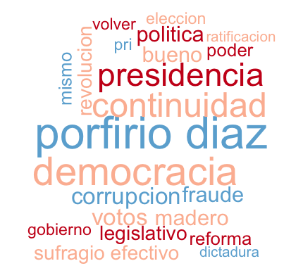
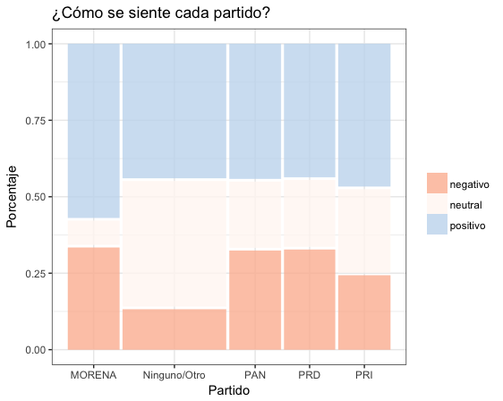
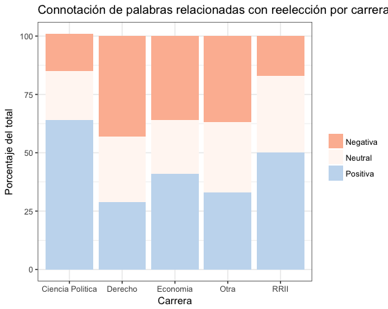
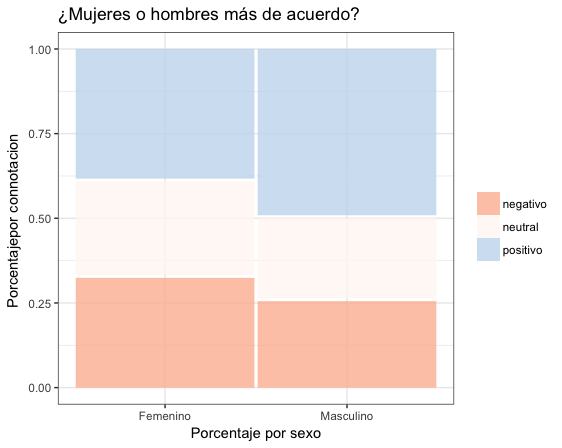

Los tecnócratas neoporfiristas y la reelección
por
Cecilia Cabello Esquer
y
Dalia Rincón Altamirano
Paradoja: el itamita en general, y los economistas y abogados en particular, se oponen a la reelección consecutiva.

Con la inminente entrada en vigor de la reelección consecutiva de legisladores y alcaldes nos preguntamos por la opinión que de esta institución tienen los estudiantes del ITAM. Si los itamitas somos la reencarnación de la tecnocracia neoporfirista—como nos ha venido calificando la izquierda—es esperable que nuestro apoyo a la reelección no titubee, como seguramente fuera el caso entre los Científicos de antaño.
Que casi todas las democracias del mundo permitan la reelección de sus legisladores no es impedimento para que las opiniones se dividan. Para un grupo la reelección, sin ser panacea, genera condiciones propicias para una mejor rendición de cuentas, además de darle una mayor continuidad y estabilidad al gobierno y, en específico, a sus proyectos. Para otro, establece la posibilidad que unos pocos se eternicen en el poder.
Durante las dos primeras semanas de septiembre 2017 (terminamos antes del terremoto), registramos la reacción espontánea de alumnos del ITAM al plantear la noción de la reelección consecutiva. En específico, preguntamos por hasta tres palabras que les vinieran a la mente. Preguntamos también por el conocimiento de la reforma electoral que introdujo el cambio en 2014, el partidismo, la carrera cursada, y otras características para elaborar un perfil del entrevistado (el cuestionario aparece al final de esta nota). Circulamos el cuestionario de Google Forms a través de redes sociales (Facebook y Twitter, principalmente). Obtuvimos 243 respuestas.
| Grupos | % muestra | % ITAM | |
|---|---|---|---|
| Mujeres | 47 | ||
| Hombres | 53 | ||
| Edad: | |||
| 19 y menos | 9 | ||
| 20 años | 6 | ||
| 21 años | 11 | ||
| 22 años | 20 | ||
| 23 años | 27 | ||
| 24 y más | 27 | ||
| Partido: | |||
| Ninguno | 40 | ||
| PAN | 31 | ||
| PRI | 14 | ||
| Morena | 11 | ||
| Otros | 4 | ||
| Carrera: | |||
| cPol | 32 | 8 | +24 |
| Eco | 21 | 22 | par |
| RRII | 14 | 9 | +5 |
| Der | 9 | 7 | +2 |
| Otras | 24 | 54 | -30 |
| total | 100 | 100 | |
| (N) | (243) | (5,510) |
Nuestra muestra se autoseleccionó. Está lejos de ser aleatoria, pero ofrece una perspectiva interesante del alumnado itamita. Incluye estudiantes de ocho carreras, originarios de veintiséis estados, de todas las afiliaciónes partidistas y edades. El cuadro 1 describe a quienes contestaron. Si logramos un buen balance de sexos en la muestra, no fue el caso con las carreras. Que somos estudiantes de ciencia política y movilizamos activamente a nuestros círculos inmediatos es patente en la casi tercera parte que representan los compañeros politólogos en la muestra. La sobrerrepresentación alcanza 24 puntos respecto del peso relativo en la población de la universidad (la columna derecha del cuadro reporta estudiantes de licenciatura del ITAM). Los internacionalistas tienen 5 puntos de sobrerrepresentación, mientras que los economistas y abogados están más o menos balanceados. La subrepresentación recae en las demás carreras (un déficit de 30 puntos). Dos de cada cinco entrevistados se declaró independiente y uno de cada tres simpatizante del PAN.1 Si la primera de las cifras anteriores pareciera estar en sintonía con la opinión pública, la segunda está inflada en detrimento del PRI y de Morena.

Figura 2: ¿Cómo se siente cada partido?
Clasificamos las palabras expresadas en tres categorías: las de clara connotación positiva de la reelección ("rendición de cuentas" es un ejemplo); las de clara connotación negativa ("corrupción"); y las neutras o ambiguas.2 Alrededor del 45 por ciento de las menciones fueron positivas, 25 por ciento negativas y 30 neutrales o ambiguas. Si predominó el optimismo, hubo también diferencias importantes entre grupos. Se observa en la gráfica 2 que la categoría residual/neutral predomina entre los apartidistas. Sorprende que el mayor porcentaje de reacciones positivas hacia la reelección lo presentaron los simpatizantes de Morena—más de la mitad, unos 10 puntos arriba de todos los demás grupos partidistas. Los morenistas también produjeron el menor número de menciones neutrales lo cual, conjugado con lo anterior, se traduce en una polarización más aguda que entre los demás partidos. Entre itamitas, por lo menos, los morenistas son el grupo más heterogéneo. También llama la atención la similitud entre panistas y perredistas, quizás un buen augurio para el Frente que intentan formar para 2018. Y que entre los independientes las menciones negativas fueran tres y media veces menos frecuentes que las neutrales.

Figura 3: Connotación de palabras relacionadas con reelección por carrera
En cuanto a la gráfica 3, revela que casi dos tercios de los politólogos le dieron una connotación positiva a la reelección, y menos de 15 por ciento una negativa. Esto se traduce en una aprobación neta (positivos menos negativos) de +50 puntos. Menos optimistas, pero con un perfil de opinión parecido, los internacionalistas alcanzaron una aprobación neta de +36. Esto contrasta con los economistas, abogados y demás estudiates que presentaron aprobaciones netas de +2, -15 y -5, respectivamente. También entre sexos hay diferencias, observables en la gráfica 4. La aprobación neta entre mujeres es +5, más moderada que el +24 de los hombres. Unos y otros tuvieron alrededor de una cuarta parte de menciones neutrales/ambiguas.

Figura 4: ¿Mujeres o hombres más de acuerdo?
Las palabras más socorridas en la reacción espontánea de los itamitas aparecen en el cuadro 2. Destaca don Porfirio, que encabeza con cerca de 5 por ciento de las menciones—quizás menos de las que se esperaría dado cómo figura en los libros de texto. Es también notable que los dos términos que siguen en recurrencias, y que juntos alcanzan 8 por ciento de las menciones, son de corte positivo: democracia y rendición de cuentas. El que este último se manifestara en inglés sugiere que lo aportaron muchos politólogos bajo la influencia de la literatura académica de su carrera.
| Frec. | + | ? | -- | |
|---|---|---|---|---|
| Porfirio Díaz | 5% | X | ||
| democracia | 4% | X | ||
| Accountability | 4% | X | ||
| presidencia | 3% | X | ||
| fraude | 2% | X | ||
| corrupción | 2% | X | ||
| Madero | 2% | X | ||
| política | 2% | X | ||
| Revolución | 2% | X | ||
| bueno | 2% | X | ||
| Estados Unidos | 2% | X | ||
| reforma | 2% | X | ||
| poder | 2% | X | ||
| PRI | 1% | X | ||
| dictadura | 1% | X | ||
| ratificación | 1% | X | ||
| inconstitucional | 1% | X | ||
| Suma | 40% | 11 | 16 |
A pesar de las limitaciones de nuestro método, los resultados permiten ver patrones interesantes. Si nuestra expectativa a priori era que los politólogos tendrían actitudes más benévolas que otros a la reelección consecutiva—expectativa que se cumplió—el resultado de los economistas nos ha tomado por sorpresa. Por la continuidad que permite imprimirle a la política económica, anticipábamos una tasa neta de aprobación francamente positiva entre estos estudiantes. Es casi nula. Si nuestros economistas representan la crema de lo que la izquierda bautizó como "tecnocracia neoporfirista", contrastan con los porfiristas originales en la suspicacia hacia la reelección consecutiva.
Podríamos concluir que, con mayor información y exposición al tema que nos ocupa se terminará presentando una mayor aceptación a la reelección consecutiva. Pero, hoy por hoy, los economistas no entrevén los incentivos para la buena representación que acompañan a esta nueva institución. Lo cual es paradójico.
1 Cuestionario
Mini-encuesta (3 min)
Somos estudiantes de Ciencia Política en el Seminario de investigación sobre representación política. Esperamos nos puedas ayudar contestando esta breve encuesta. Si ya la respondiste por favor no la contestes de nuevo.
Contestaste esta encuesta
[ ]En línea (solo)[ ]Con encuestador
¿Eres estudiante del ITAM?
[ ]Sí[ ]No
¿Cuáles son las primeras palabras que piensas si te digo REELECCIÓN? (hasta tres palabras)
En 2014 hubo una reforma electoral, ¿sabes quién se puede reelegir? Puedes seleccionar a más de uno.
[ ]Presidente[ ]Gobernadores[ ]Diputados Federales[ ]Senadores[ ]Diputados Locales[ ]Alcaldes[ ]Ninguno[ ]No sé
Edad:
Carrera. Si estás en un plan conjunto o simultáneo selecciona ambas carreras.
[ ]Ciencia Política[ ]Derecho[ ]Administración de Empresas[ ]Dirección Financiera[ ]Contaduría[ ]Relaciones Internacionales[ ]Mecatrónica[ ]Matemáticas Aplicadas[ ]Computación[ ]Ingeniería en Negocios[ ]Telecomunicaciones[ ]Actuaría[ ]Economía[ ]Ingeniería Industrial[ ]Otra
Sexo: Masculino o Femenino
Estado de procedencia:
¿Con cuál partido político simpatizas?
[ ]PRI[ ]PAN[ ]PRD[ ]PVEM[ ]MORENA[ ]Otro[ ]Ninguno
Si contestaste alguno, ¿qué tanto simpatizas con tu partido?
[ ]1 (muy poco)[ ]2[ ]3[ ]4[ ]5 (completamente)
Nota al pie de página:
Las mujeres de nuestra muetra simpatizan más con el PAN que los hombres. Dado que levantamos la encuesta antes de la renuncia de Margarita Zavala al PAN, sería interesante ver si estos resultados se sostienen al día de hoy.
Toda clasificación tiene un grado de arbitrariedad. Por ello le pedimos a un grupo de 16 compañeros que repitiera la clasificación para convencernos de su validez. A petición del lector, podemos reportar la consistencia entre re-codificaciones. Mande un mail a [BROKEN LINK: nil] o [BROKEN LINK: nil].